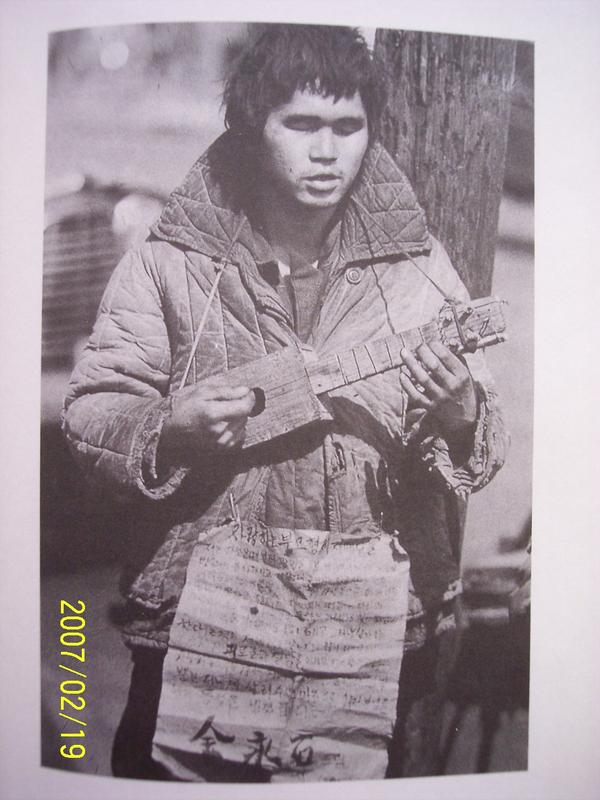

POSTS
기타리스트 ( 종이거울 속의 슬픈얼굴 / 최민식 )
길고양이 사진전 을 보면 냥이들 자태보다는 그 사진을 찍은 사람들의 길냥이에 대한 애정이 먼저 느껴집니다.
인터넷에서 흔히 볼 수 있는 아기들 사진을 봐도 그렇구요.
피사체에 대한 애정이 없는 사진은 아무리 기술적으로 훌륭하더라도 ‘보도사진’ 같은 느낌만 듭니다.

기타소리가 들립니다!
종이거울 속의 슬픈얼굴 저자 : 최민식 글, 사진
96년 출판되었던 종이거울 속의 슬픈얼굴이 2004년에 다시 나왔다.
(최민식 선생님, 사진을 무단으로 도용하여 죄송합니다.)